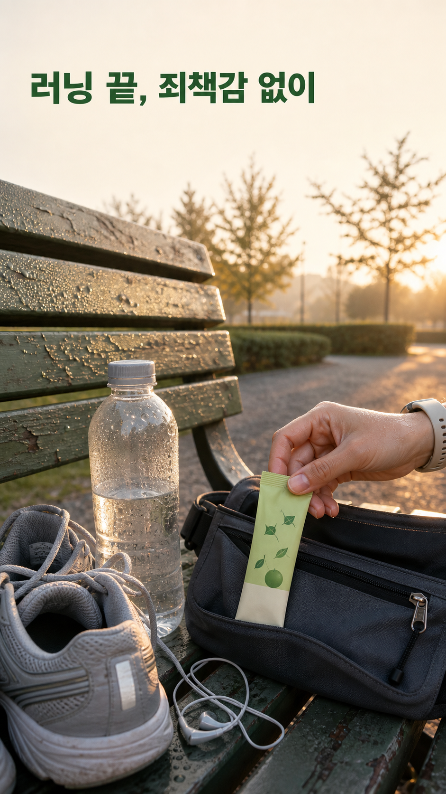
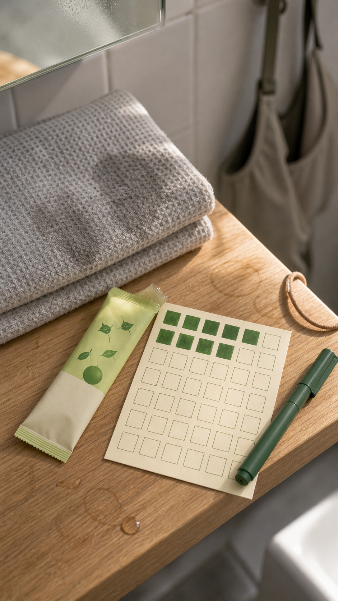
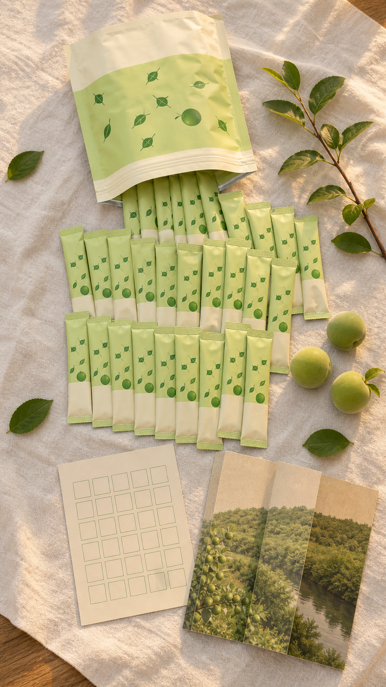
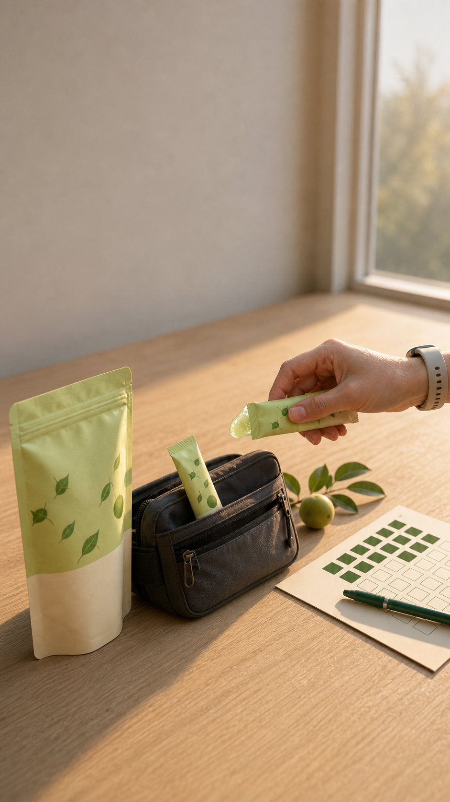

러닝 끝, 젤리 집었다 놓은 날
러닝 끝나고 샤워 전에 뭔가 달달한 게 당기는데, 설탕 젤리 봉지를 보면 방금 뛴 게 아까워집니다. 매실청은 병째라 가방에 못 넣고, 에너지젤은 인공 향이 강하죠. 광양 매실로 만든 20 g 스틱젤리는 그 자리를 위해 만들었습니다.
런칭가로 30포 받기
샤워 전 한 포, 마음 편한 달콤함
운동 가방 앞주머니에 스틱 하나. 뜯어서 짜 먹으면 새콤달콤한 매실 젤리가 25 kcal로 끝납니다. 설탕 대신 알룰로스를 써서 "먹고 후회"가 남지 않습니다. 운동 기록 카드에 하루 한 칸을 채우면 30일이 한 장으로 남습니다.
런칭가로 30포 받기매실청도 에너지젤도 아닌 이유
매실청은 당 함량이 높고 병째라 휴대가 안 됩니다. 에너지젤은 향이 인공적이고, 홍삼은 운동 직후 먹기엔 무겁습니다. 그래서 광양골은 섬진강변 계약 농가 8곳의 6월 수확 매실로 추출물을 만들고, 상온 보관되는 20 g 젤리 스틱에 담았습니다.
- 전남 광양 계약 재배 매실, 6월 수확분만 사용
- 건강기능식품 인증 제품 — 매실추출물은 피로 개선에 도움을 줄 수 있음으로 기능성을 인정받은 원료입니다
- 무설탕(알룰로스), 1포 25 kcal

결제하면 이런 파우치가 옵니다
아래는 구성 시안입니다. 젤리 30포가 지퍼백 파우치에 들어오고, 30칸 운동 기록 카드가 함께 있습니다.
운동 가방에 넣으면 끝입니다
1. 파우치째 운동 가방에 넣어 둡니다. 상온 보관이라 그대로 둬도 됩니다. 2. 운동 끝나고 샤워 전에 한 포. 냉장하면 젤리가 단단해져 씹는 맛이 납니다. 3. 기록 카드에 하루 한 칸. 챙길 컵도, 물도 필요 없습니다.

받으시는 것과 순서
1. 먼저 받는 것: 매실추출물 스틱젤리 20 g × 30포, 지퍼백 파우치 2. 매일 하는 것: 운동 후 한 포, 기록 카드 한 칸 3. 막힐 때: 신맛이 강하면 냉장 후 드세요. 문의는 스토어 톡톡으로 4. 한 달 뒤: 30칸이 찬 기록 카드. 2박스 주문은 무료배송
| 항목 | 내용 |
|---|---|
| 내용량 | 20 g × 30포 (600 g) |
| 원료 | 매실추출물 (전남 광양산 매실) |
| 지표성분 | [자료 필요: 1일 섭취량당 지표성분 함량 — 라벨 기준] |
| 기능성 | 피로 개선에 도움을 줄 수 있음 |
| 열량·당 | 1포 25 kcal, 설탕 무첨가(알룰로스) |
| 섭취법 | 1일 1회, 1회 1포 |
| 보관 | 상온 (냉장 가능) |
| 인증 | 건강기능식품 |
맛이 안 맞으면 남은 수량 반품됩니다
미개봉 7일 이내는 전액 환불입니다. 개봉 후에도 맛이 안 맞으면 첫 구매 1회에 한해 남은 수량을 반품·환불해 드립니다. 30포 다 드신 뒤 "피로가 안 풀린다"는 이유의 환불은 어렵습니다 — 기능성이 인정된 원료지만 개인차가 있고, 저희는 지킬 수 있는 약속만 적습니다.
섭취 시 주의: 알레르기 체질은 원재료를 확인하세요. 임산부·수유부·어린이·질환이 있거나 약을 드시는 분은 전문가와 상담 후 섭취하세요. 이상 사례가 생기면 섭취를 중단하고 전문가와 상담하세요.
FAQ
- 배송은 얼마나 걸리나요? [자료 필요: 실제 배송 정책 — 출고일·택배사]
- 여름에 가방에 두면 녹나요? 상온 보관 제품입니다. 직사광선 아래 장시간은 피해 주세요.
- 하루 두 포 먹어도 되나요? 1일 섭취량은 1포입니다. 라벨 기준을 지켜 주세요.
런칭가는 9월 30일까지
정가 36,000원 → 런칭 15% 할인 30,600원 (2026-09-30까지). 2박스 주문은 무료배송입니다. 다음 러닝 끝나고 편의점 앞에 설지, 가방에서 한 포 꺼낼지는 지금 정하시면 됩니다.
런칭가로 30포 받기